ELECTION MANAGEMENT SYSTEM
USER MANUAL GUIDE
Table of Contents
Brief Introduction
About EMS
SuperAdmin
Home
Institute List
1.2.1 View Pending List
1.2.2 View Approved List
1.2.3 Delinquent Institute List
1.2.4 View All
Modify Institute Record
Search Institute
Manage Superadmin Account
Change Working Status
InstituteAdmin
Home
Manage Election Manager
2.21 Create Election Manager
2.2.2 Update Election Manager
Election Manager
Home
Manage Election
3.2.1 Create Election
3.2.2 Update Election
3.2.3 Preview Ballot
Manage Voter
3.3.1 Add
3.3.2 View
3.3.3 Block
Manage candidate Request
Manage Candidate
Voter
Voter Registration
Voter Home
Current Election
Election Result
Voting Process
Candidate
Home
Nomination List
Send Withdrawl Request
Final List
Upload Manifesto
Brief Introduction
About EMS
EMS is a multi-institutional and multi-lingual election management system. It is a role-based access system. In future System supports both the Bio-metric Authentication mode as well as unique id (UID) authentication mode and provides the mailing notice facility to its users. User can choose any one language among English, Hindi, Urdu and Arabic.
There are five modules in Election Management System.
1. Superadmin
2. Instituteadmin
3. Election Manager
4. Voter
5. Candidate
1. SuperAdmin
Superadmin is the person who manages the EMS on server side. He receives registration requests from different institutes who wish to use the services of EMS. Superadmin has the privileges to accept or reject requests of registration from any institute after verification. After Accepting registration request of institute, a user name and password will be provided on the email address of the institute.
Superadmin can login into system by filling username and password:

On successfull login Home Screen for Superadmin appears.
1.1 Home

On home screen there is a list of actions that can be performed by superadmin in main menu.

1.2 Institute List
onclicking Institute List a drop down menu appears having following actions
1.2.1 View Pending List
Superadmin can view list of pending requests of Institites by clicking View Pending list on Main Menu.
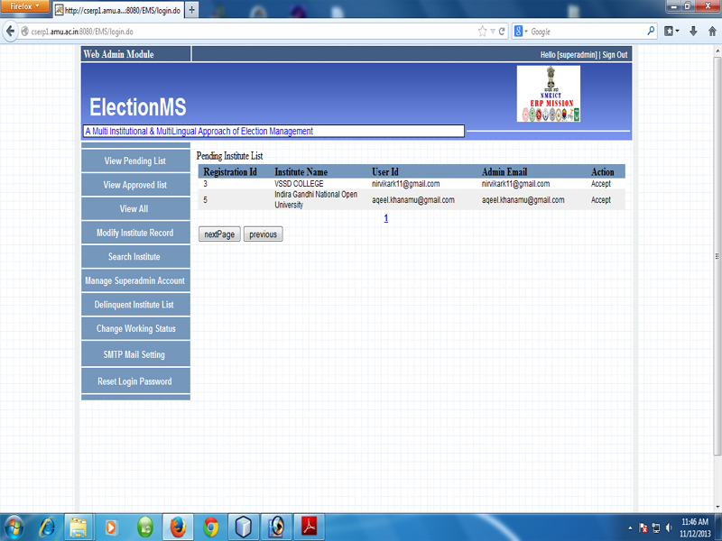
After Viewing Pending List, superadmin can perform:
Accept Request
Back

Accept: Before accepting request superadmin should enter Institute Id.
Oncliking Accept button institute with given institute id is registered and user name, password is sent to the institute's email id.
Back: Back Button will carry to superadmin on Main Menu again.
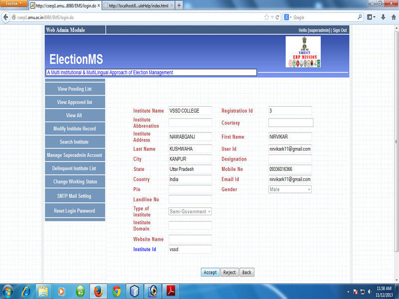
1.2.2 View Approved List: superadmin can View whole List of approved request by clicking view approved list on main menu.
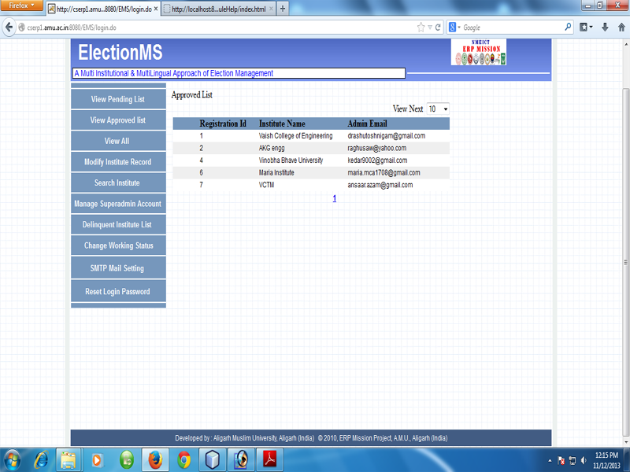
Superadmin can also view the detail of approved institute.

1.2.3 Delinquent Institute List:An institute blocked by superadmin is delinquent institute. Superadmin can view the list of delinquent institues .

1.2.4 View All: By Clicking view all, superadmin can see both pending list as well as approved list of institutes.
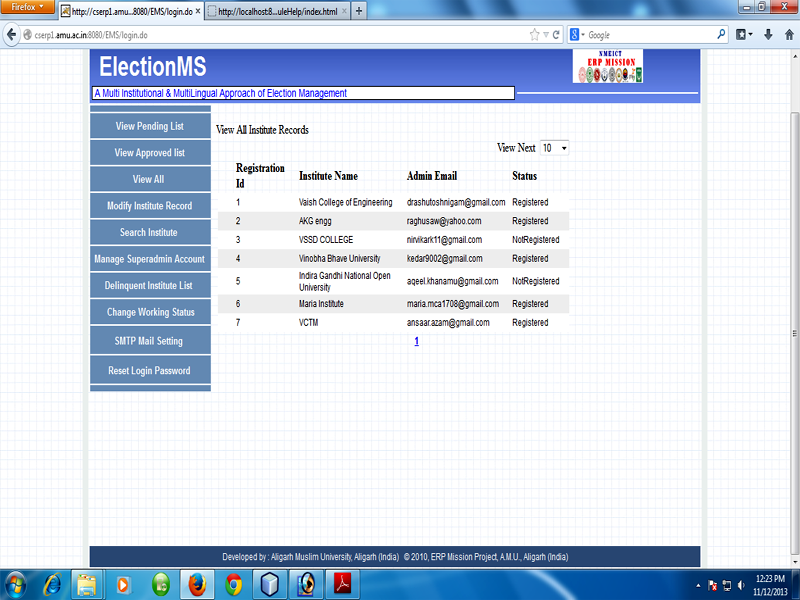
Following functions are related to Title Modify Institute Record:
Updated
Cancel

using this functionality superadmin can update the details of institutes.

1.4 Search Institute
Superadmin can search Institute by simply entering the starting key word of institute into corresponding text field.

For example: if user wants to search about Jamia Millia Islamia, he should enter “j” in given textbox.
Superadmin can also view detail about respective institute.
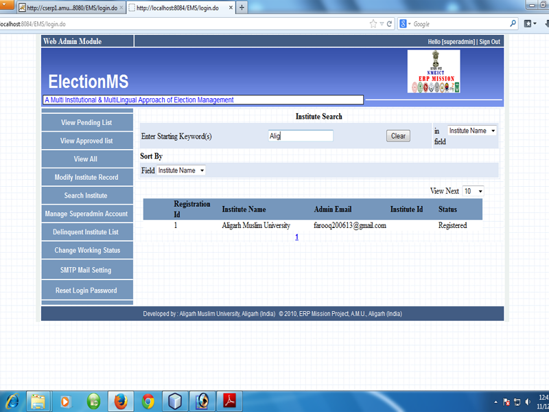
Super administrator can change his Password. Before Changing password superadmin must enter his existing password.

If superadmin enter the same password as the old one, a message will be displayed that please enter password different from the previous one!

superadmin has the authority to change the working status of Institute. For e.g. From Institute's “OK” status to “Blocked” by clicking on action Change status.


By selecting working status either Ok or Blocked superadmin can update status of institute by clicking accept button. Consequently working status will be changed as “Block”.after accepting a pop-up with message “working status changed successfully” will be displayed.

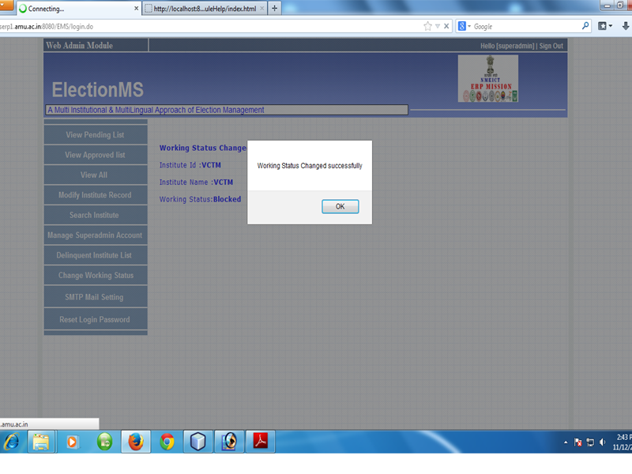
Instituteadmin is the authority of any institute who will manage election managers of the institute.
First of all instituteadmin should send request for registration to superadmin by simply clicking

on “Want to join? Click here!” On login page. After this instituteadmin will be on page:

Fill the detail in corresponding field.

This request will be send to super administrator. This is not final registration; first superadmin will examine whole detail that is given in registration form. After examining, superadmin has authority to accept or reject the request. If he accept the request, a user name and password will be send to the institute's email id.
With given username and password instituteadmin can login into system.

If superadmin has blocked the working status of instituteadmin, instituteadmin cannot log into system.
After successful login instituteadmin can perform various activities related to election process

2.1 Home


2.2.1 Create Election Manager
By simply clicking “Create Election Manager” on Menu Bar, institiuteadmin can create election manager.
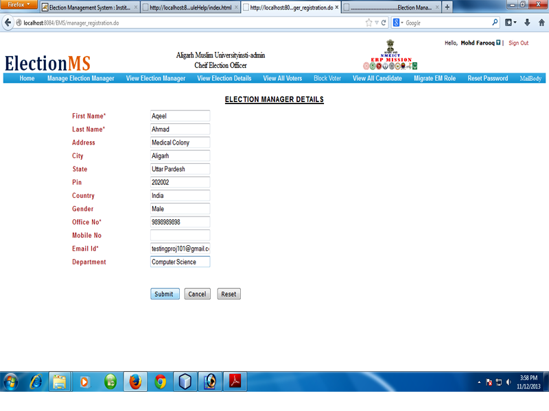

After submitting detail, a user id and password for election manager will be send to his email id.

2.2.2 Update Election Manager
Instituteadmin can search about election manager to whom he want to update by simply entering the starting key word first name, last name etc of election manager into corresponding text.

Following activities are related to Update Election Manager
Update
Back
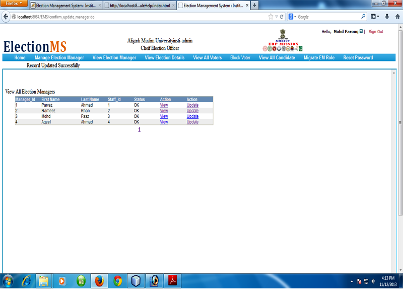
if instituteadmin want to see about the status of election that whether an election is closed or started or is in under process, he should simply click on view election detail.

Election Manager is the authority of any institute who will manage the whole election process. Election Manager can create, open and close elections. Election Manager will be able to manage requests of voters and candidates for registration. It will be the responsibility of Election Manager to authenticate voters, candidates and publish the result on time.
After the creation of election manager, username and password has mailed to the election manager’s email id.
With the given user name and password, election manager can login into system
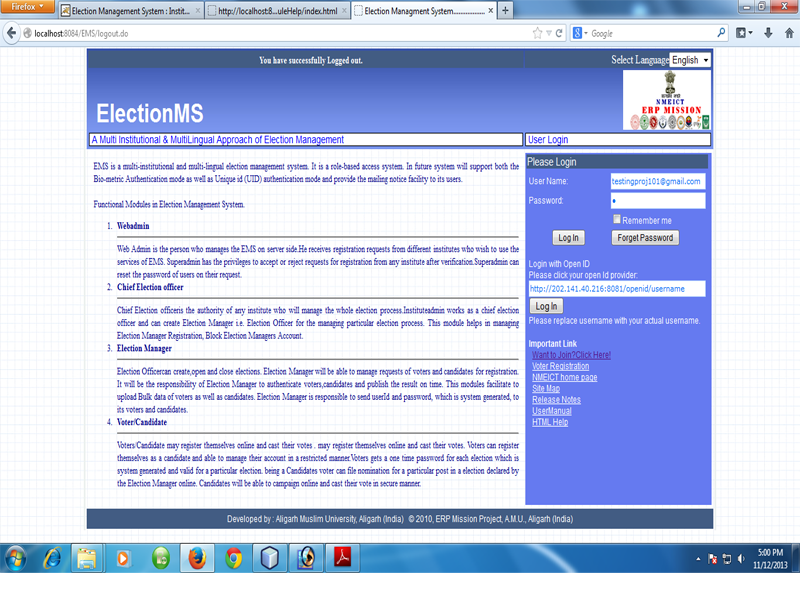
After the successful login election manager can perform the following activities
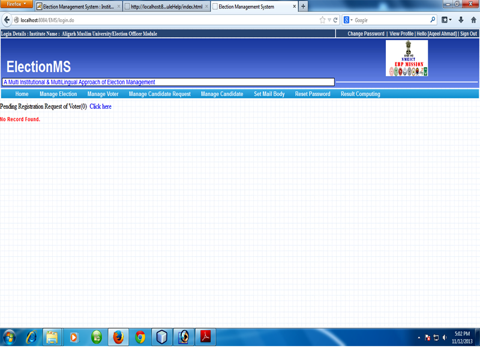
3.2 Manage Election

3.2.1 Create Election

Election Id is primary key and should be unique. After clicking on Add button, election manager will be on the next screen.
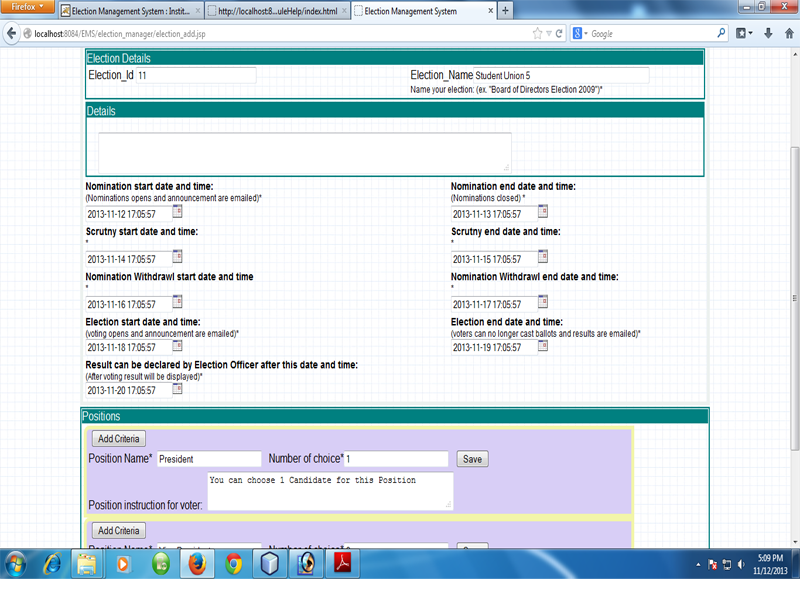
On this screen Election Manager can fill the all election related details such as important dates, criteria
and eligibility details.
3.2.2 Update Election

On
cilcking Update button user will be on follwing screen showing
prevously stored information of a particular election.

3.2.3 Preview Ballot
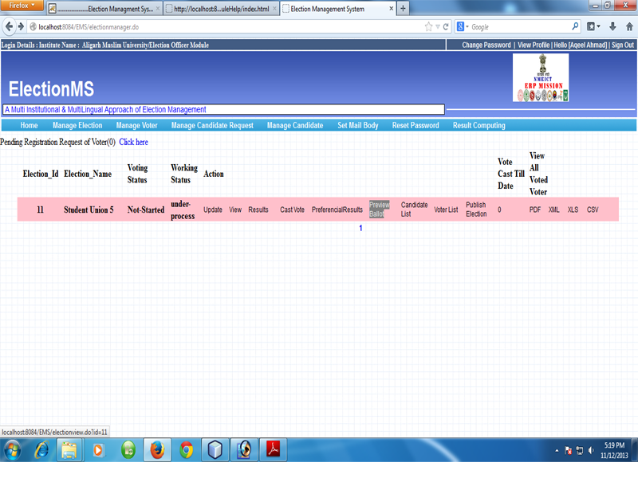
Ballot Preview: After the creation of election, the ballot is automatically generated for that created election. Ballot also contains the list of candidates for the respective posts.

3.3 Manage Voter

3.3.1 Add
3.3.1.1 Register New Voter: New voter send registration request to Election Manager through a given registration form.

3.3.1.2 Register from Pending List
Election manager can accept voter request from pending list of voter for registration.
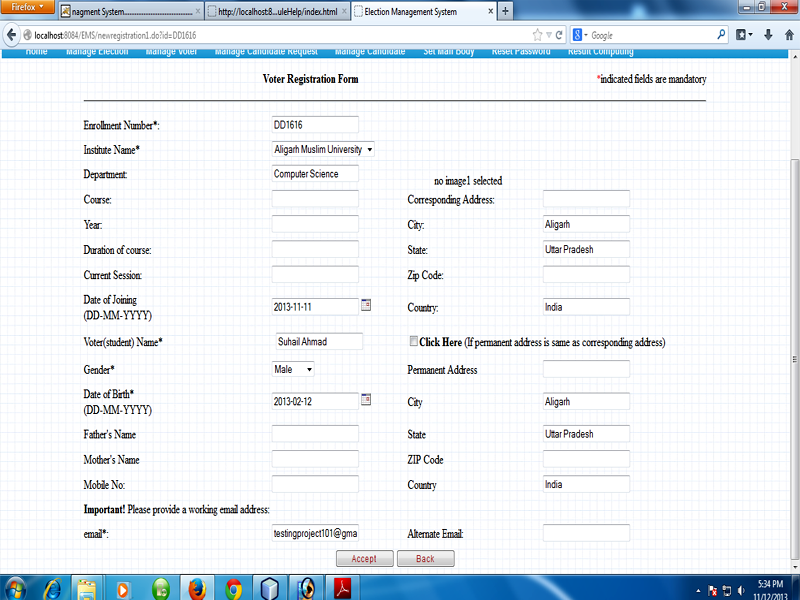
3.3.2 View
Election Manager can view list of active voter, block voter also by clicking on view bar on main menu. If election manager want to search about voter whose name is starting from alphabet “a”
, he should enter “a” in given field and he got required list.
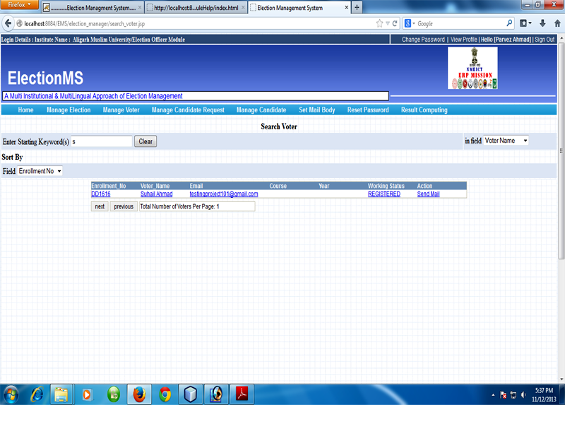
3.3.3 Block
Election Manager can block voter, on clicking block , list of voter will appear on the screen.
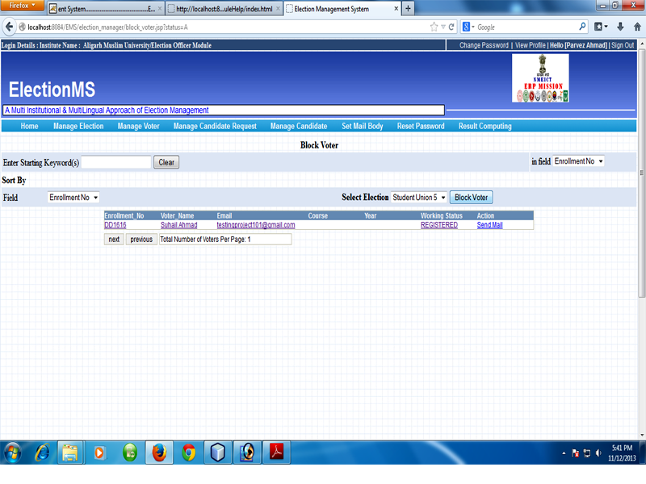
Election manager can manage the requests of candidates.
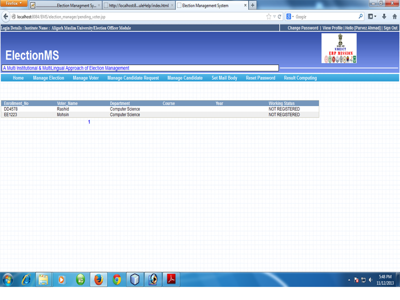
On clicking accept/reject window
containing deatils of candidates will appear, Election Manager can
accept or reject the requests.
.

If candidate fulfill the required criteria, election manager accept the request and a confirmation message will be mailed to candidate’s email id .
3.5 Manage Candidate
This facility provides the way manage the information of candidates such as information of accepted, rejected and blocked candidates. Election manager can update the information of candidates and generate the different reports.
4. Voter
Voters can register themselves online and cast their votes. Voters can also register themselves as a candidate and will be able to manage their account in a restricted manner. Voters can interact with candidates online using services like Blog, Chat, bulletin boards, etc.
4.1 Voter registration
To register, voter should send registration request to the Election Manager by simply clicking on “Voter Registration” on Login page.
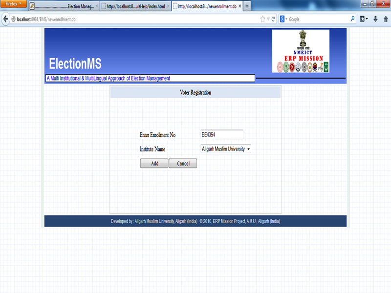

Enrollment is the unique Id of voter that must be exists in respective Institute.
After Clicking Add Button voter be on page:
 After submission of
voter's detail, request will be send to Election Manager.Election
Manager whenever login into system, he will find that there is
request for voter registration. Manager examines detail given in
registration form. If detail fulfill criteria, election manager
accept request and a Id and password will be send to voter’s email
id.
After submission of
voter's detail, request will be send to Election Manager.Election
Manager whenever login into system, he will find that there is
request for voter registration. Manager examines detail given in
registration form. If detail fulfill criteria, election manager
accept request and a Id and password will be send to voter’s email
id.
4.2 Voter Home
Voter can login into system using user id and password provided by the Election Manager.
After successfull login user will be on voter home screen.
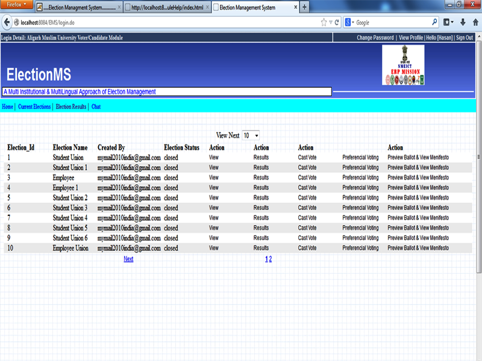
4.3 Current Election
Current Election link shows details of currently open election and the list of positions for which user can send the request of nomination for a particular post in that election. On clicking the button send request for candidature in front of position name, request for the nomination for that post is registered and on acceptence by Election Manager user will get another user id and password for login as candidate.
User can view the results of election by clicking on Election Results link.
 The result about selected
election will be displayed.
The result about selected
election will be displayed.
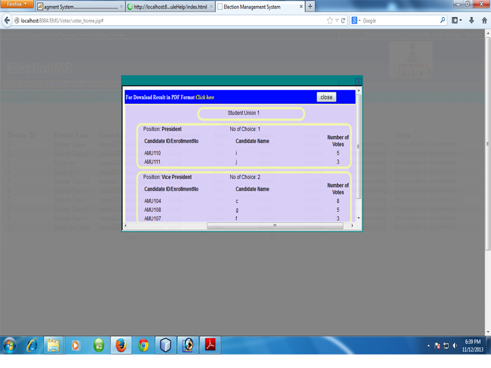
4.5 Voting Process
voter can cast their vote by clicking on link cast vote. A window will appear asking to enter one time pass key which is send on your email id.
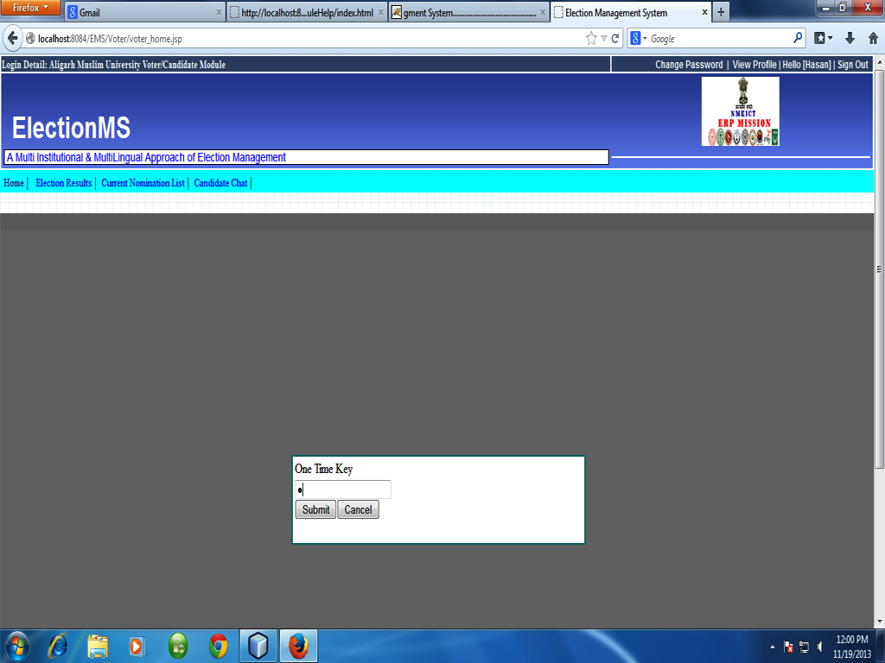
On clicking submit button ballot paper appears, now voter can choose their candidate.

On clicking Vote Now button vote will be cast successfully and message will appear .

5. Candidate
Candidate can login into system using user id and password provided by the Election Manager.
5.1 Nomination List
Candidate can see the nomination list that this the list of candidate who are nominated for the same post.
Candidate can withdraw their nomination by clicking the link 'Send Withdrawl Request'.
It is the list of final candidates for election. On clicking the link ' Final List' candidate can see the fianl list of candidate.
Candidate can upload their mission statement i.e. manifesto for the election. On clicking Upload manifesto link candidate can upload hier mission statements.